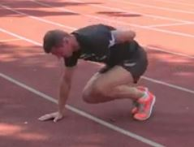

Зарядка
Для разгона лимфы и крови после сна, повышения температуры тела хорошо ежедневно выполнять зарядку. Обычно в зарядке сосредотачиваются на базовых упражнениях, охватывающих наиболее крупные группы мышц. Современный человек живет в состоянии гиподинамии, имеет много слабых мест, например поясницу, которые нуждаются в постоянной тренировке, разогреве. Упражнения выполняются 1 подходом, без максимализма повторений. Цель зарядиться, а не устать. Сбоку указываю условные цифры, когда лучше перейти к следующим упражнениям.
Набор бегуна
Стопы
Стойка на гранях стопыСтойка или ходьба на каждой стороне стоп ( на носках, пятках и боковых сторонах), придерживаемся за что то, секунды
| 30с |
Перекаты на гранях стопыПерекатываемся по граням стоп.
| 60с |
Перекаты на 1 ногеТоже самое, но на 1 ноге, придерживаемся за что то руками.
| 30с |
Наклоны
Наклоны впередПоднимаем руки вверх, держа спину и руки, наклоняемся вперед.
| 10 |
Наклоны вперед на 1 ногеРабочая нога чуть согнута, держим этот угол при выполнении наклона. Постоянно чередуем руки тянущиеся к полу.
| 5 |
Выпады
Выпады назадПрисаживаемся до прямого угла в колене передней ноги. Выпады ног, на каждую, лично мне больше нравится делать назад.
| 20 |
Выпады вперед с касанием пола рукамиКолено должно быть четко вертикально над стопой во время выпада.
| 10 |
Боковые выпады с касанием пола рукамиПоднимаем руки, делаем выпад вбок, тянем руки к ступне рабочей ноги. В выпаде держим голень перпендикулярно полу.
| 10 |
Выпады в планкеОпускаемся в планку на ладонях, выносим ногу к руке. В выпаде держим таз, не поднимая и не заваливая.
| 10 |
Вытягивание ноги
Вытягивание ногиВстаем на четвереньки, сначала тянем одну ногу, потом другую.
| 30 |
Вытягивание ноги и рукиДобавляем к предыдущему упражнению вытягивание противоположной руки. Делаем на каждую сторону.
| 20 |
Планка
Планка на ладонях | 120c |
Планка на предплечьях | 120с |
Динамическая планкаВыгибаем тело в планке то в одну сторону, то в другую.
| 60с |
Динамическая планка на 1 ногеВыгибаем тело в планке то в одну сторону, то в другую.
| 30с |
Динамическая планка на 1 рукеВыгибаем тело в планке то в одну сторону, то в другую.
| 30с |
Динамическая планка на 1 руке с поворотомСкручиваем тело в планке то в одну сторону, то в другую.
| 30с |
Динамическая планка на 1 ноге с поворотомСкручиваем тело в планке то в одну сторону, то в другую.
| 30с |
Прыжки
Прыжки в планке на ладоняхВстаем в планку и в темпе прыжками перемещаем ноги.
| 30 |
Прыжки в планке на 1 руке

Встаем в планку и убираем за спину 1 руку. Делаем подход прыжков и меняем руку.
| 25 |
Классика
Отжимания
наклонные отжиманияОпора на уровне пояса: подоконник, высокая кровать, тумба и т. д. Сгибаем локти, пока торс не коснется поверхности.
| 40 |
отжимания на коленяхВстать на колени, руками упереться перед собой,
ноги скрестить позади себя. Сгибаем локти, пока лицо не окажется на
уровне основания кисти руки.
| 30 |
половинные отжимания Под поясом предмет высотой с баскетбольный мяч —
23-24 см. Сгибаем локти до касания. На начальном и продвинутом этапе
мяч можно подвинуть к груди. Лучше купить мяч на этом этапе, т. к. он
все равно пригодится как таковой.
| 25 |
полные отжиманияКлассические отжимания
| 20 |
Приседания
поддержаный присед Повторяем аналогичное движение предыдущему
упражнению, но на этот раз используя любой предмет выше уровня бедер
(стул с высокой спинкой или стол).
| 30 |
полуприсед Руки на поясе, на груди или на шее. Ноги на
ширине плеч. Сгибаемся в бедрах и коленях, пока колени не образуют угол в
90°, иначе говоря — пока бедра не станут параллельны полу.
| 50 |
полный приседПовторяем аналогичное движение предыдущему
упражнению, но на этот раз до тех пор, пока задняя поверхность бедер не
будут лежать на голенях.
| 30 |
Подъем ног
подъемы коленей лежа Лежа на полу, держим ноги вместе и под углом
примерно 90°, от пола 2-5 см. Поднимаем колени над бедрами, до тех пор,
пока не станут перпендикулярны полу, а икры — параллельны.
| 35 |
подъемы согнутых коленей лежаПоложение такое же, как в прошлом упражнении, но в этот раз, ноги согнуты под углом 45°.
| 30 |
лягушачьи подъемы лежа Поднимите согнутые ноги, но вместо паузы в верхней части выпрямляем ноги.
| 25 |
подъемы прямых ногПодъем ровных ног.
| 20 |
Мосты
короткие мосты Лежа на спине, согнуть ноги в коленях (пятки в
15-20см от ягодиц) и скрестить руки на животе. Выполняем подъем бедер и
спины до тех пор, пока весь вес не переместится на плечи и стопы.
Вдыхать на пути вниз.
| 50 |
ровные мостыСидя на полу держим верхнюю часть тела
вертикально прямо, ладонями упираемся по разные стороны от бедер.
Поднимаем таз до тех пор, пока торс и ноги не образуют прямую линию.
Выдох на подъеме вверх, вдох — вниз.
| 40 |
Подтягивания
висУхватитесь за турник прямым хватом
(руки на ширине плеч) и повисните на прямых руках. Держим спину напряженной.
| 60с |
горизонтальные подтягиванияНеобходим предмет, имеющий проем снизу и
достаточно устойчивый, чтобы выдержать ваш вес. Навряд ли это ваш
стол=). Из горизонтального положения ухватитесь за предмет прямым хватом
(руки на ширине плеч) и повисните на прямых руках. Тело держим прямым.
Сгибая локти, подтягиваемся вверх до касания поверхности на уровне
кистей.
| 30 |
неполные подтягивания Ухватитесь за перекладину прямым хватом, руки на
ширине плеч, локти под прямым углом (это ключевое отличие от полных
отжиманий), плечи параллельны полу. Согните колени и заведите лодыжки
одну за другую. Подтянитесь до тех пор, пока подбородок не окажется над
перекладиной. Пауза в 1 секунду и медленный спуск в исходное положение.
| 15 |
полные подтягиванияПовисните на турнике, ухватившись за него на
ширине плеч или чуть шире. Как и в прошлом упражнении скрестите ноги.
Подтянитесь до тех пор, пока подбородок не окажется над перекладиной.
Пауза в 1 секунду и медленный спуск в исходное положение.
| 10 |
Часть упражнений и картинок взято из тренировки Александра Жукова https://www.youtube.com/watch?v=SWAYKHkVR4I
Часть из книги Тренировка Заключенных Пола Уэйда